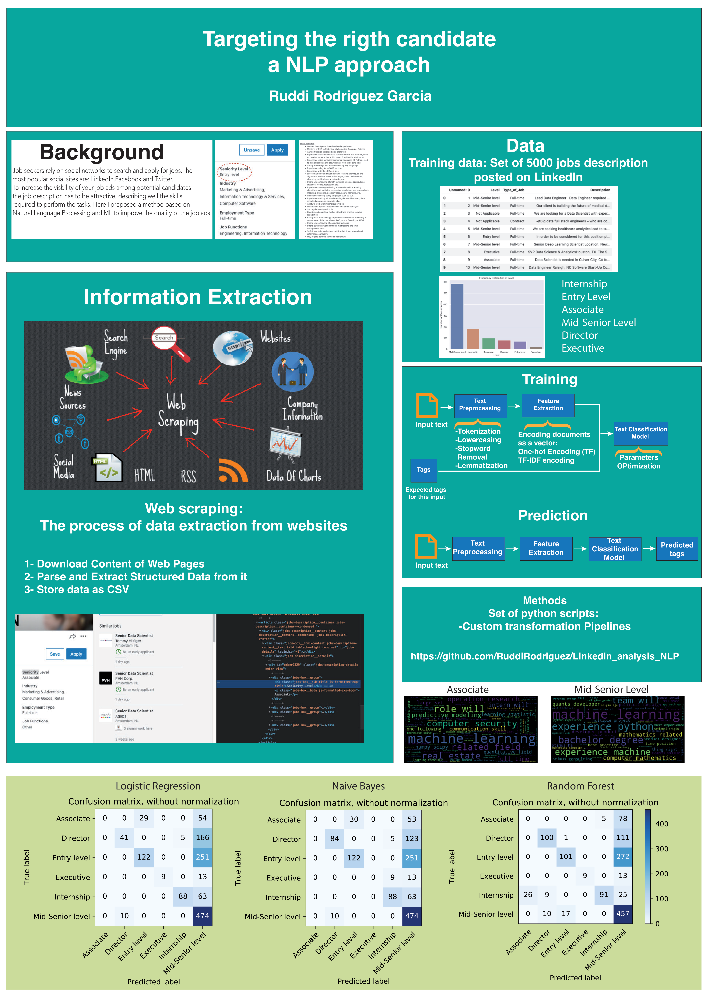

The question that started it
Could the language of a job advertisement tell me whether the role was an internship, an entry-level position, or something more senior? This was my first NLP project. I collected job descriptions and used the seniority categories attached to those advertisements as the answers the model would learn to predict.
NLP—natural language processing—gave me a way to work with text as data. The descriptions contained responsibilities, experience requirements, qualifications, and plenty of repeated recruitment language. I wanted to see whether their wording contained enough information to recover the advertised level.
There were six categories: Associate, Director, Entry level, Executive, Internship, and Mid-Senior level. These were labels from the advertisements, not levels assigned through a separate expert review. The question was how well a classifier could reproduce those labels from the description alone.
The main development recorded here happened in 2019. A small historical disclaimer: this was before ChatGPT could explain why my text pipeline had become longer than the job advertisement. The poster below is the original record of the project; these articles explain the code and the learning behind it.
I kept moving as the method grew
I kept working forward, learning as I went, until cross-validation and pipelines became part of the project. The repository records that progression: separate scripts for preparing text and fitting models, experiments with repeated evaluation and parameter searches, then a shared pipeline that handled the text and classifier together.
Those changes overlap. A pipeline first appears inside a search before all cleaning steps are moved into the later shared implementation. The series follows that learning journey, rather than treating every filename as a completely separate project.
| Recorded stage | What changed |
|---|---|
| August 2019 · first experiments | Word counts and TF-IDF, logistic regression and Naive Bayes, separate preparation functions. |
| August 2019 · evaluation and search | Cross-validation and parameter searches; later searches include word extraction inside the fitted pipeline. |
| Late August–September 2019 · shared workflow | Custom text transformations, then lemmatisation and TF-IDF in the combined pipeline. |
| November 2019 · comparisons | Saved confusion matrices for logistic regression, Naive Bayes, and random forests. |
| March 2022 · archive addition | The original poster was uploaded. This upload does not introduce a newer model. |
The original poster
The poster, “Targeting the right candidate: an NLP approach,” brings collection, text preparation, model fitting, and prediction onto one page. It also preserves word clouds and the three model-comparison figures. I have kept the original PDF unchanged; the articles use clearly labelled excerpts beside the relevant code.


The poster uses “one-hot encoding (TF)” as a label. The scripts shown here use word counts, including repeated occurrences, followed in some versions by TF-IDF weighting. I explain the implementation as it appears in the code.
Follow the project from its beginning
| Chapter | The question it follows |
|---|---|
| 02 · Collecting data | The first model needed examples. I collected descriptions and their advertised seniority labels, then brought the batches together. |
| 03 · Text features | Cleaning text, counting words, and exploring word combinations and TF-IDF before those steps became a pipeline. |
| 04 · First models | Logistic regression and Naive Bayes gave me predictions. Understanding their mistakes became the next part of the project. |
| 05 · Cross-validation | How I moved toward cross-validation—and why the text representation had to become part of that evaluation. |
| 06 · Model searches | From manually chosen settings to systematic searches over word groups, vocabulary size, and model parameters. |
| 07 · Full pipelines | The later version connected cleaning, lemmatisation, word extraction, weighting, and classification in one fitted process. |
| 08 · Results and reflection | Reading the original model comparisons by class, then looking back at the data and the limits of the experiment. |
Start with how I collected the examples. Each chapter links to the next and to the source functions it discusses. The closing article reads the saved results and revisits the repeated descriptions in the archive.
Based on the original project code and records. Historical results and retrospective checks are identified in the text. Personal file paths are omitted from examples.